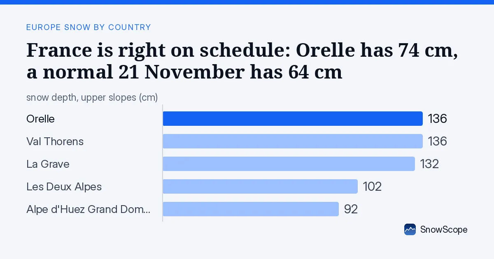
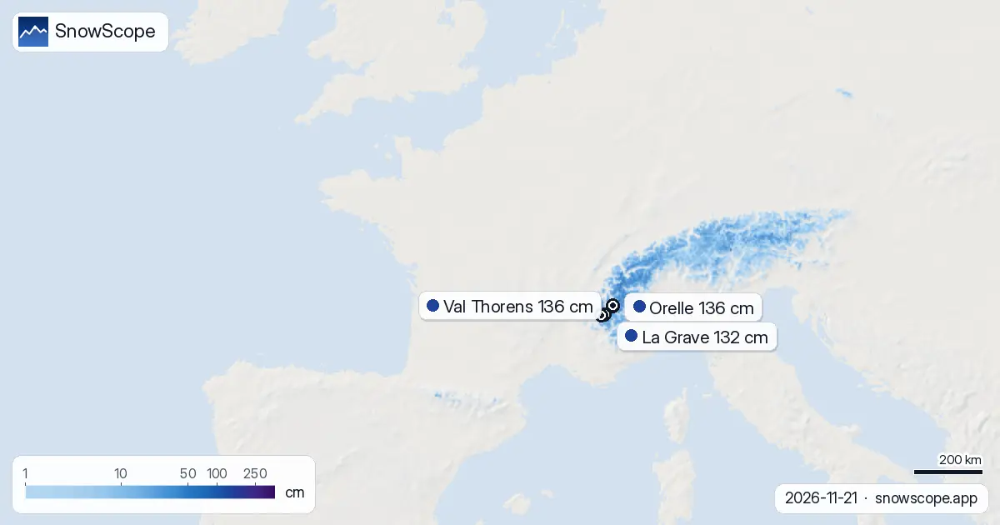

France is right on schedule: Orelle has 74 cm, a normal 21 November has 64 cm
On 21 November, Orelle stands at 74 cm—just above its usual depth for this date. Five major resorts are ahead of their historical averages, and the Mont Blanc massif has already seen 242 cm of snow in three days.
See the live snow forecast for Orelle in the SnowScope appSnow depth, powder alerts and the 3D map, free.
Early-season timing: on track so far
Orelle's 74 cm at 2,780 m sits 10 cm above the typical 21 November baseline of 64 cm. This is not exceptional, but it is solid: the season is unfolding at a normal pace.
Val Thorens leads the depth rankings with 136 cm, more than double its usual 43 cm for late November. La Grave holds 132 cm against an average of 80 cm. The pattern across the top five resorts shows early-season snow is running well ahead of history.
France has 12,530 km² of snow-covered ground today—14 % of the mapped high terrain. This marks a small loss from yesterday, but a strong gain over the past week.
| Resort | Today | Normal for the date | Share of normal |
|---|---|---|---|
| Orelle | 74 cm | 64 cm | 116 % |
| Val Thorens | 104 cm | 43 cm | 242 % |
| La Grave | 86 cm | 80 cm | 108 % |
| Les Deux Alpes | 34 cm | 28 cm | 121 % |
| Alpe d'Huez Grand Domaine | 37 cm | 24 cm | 154 % |

Where the snow sits by height
Below 1,500 m, slopes are almost bare: on average 1 cm lies between 1,000 and 1,500 m, with only 8 % of the ground white. Between 1,500 and 2,000 m the picture improves slightly to 6 cm average and 48 % cover.
The practical skiing line sits around 1,700 m: above that, snow deepens steadily. Between 2,000 and 2,500 m you find 16 cm on average with 75 % cover—enough for lower-slope runs. Above 2,500 m, the base strengthens to 44 cm and 95 % coverage, so upper terrain is reliably white.

Three days of heavy fresh snow: what arrived
Over 72 hours to 21 November, the Mont Blanc massif received 242 cm of fresh snow. The northern French Alps gathered 145 cm, and the southern ranges saw 93 cm. About 11,610 km² received at least 5 cm.
Sunday 22 November is the standout day ahead, with up to 55 cm expected in a single day. The three-day window through Tuesday 24 November could add 88 cm at the highest resorts. By next weekend, the total forecast reaches 92 cm on the snowiest slopes.
Resort-by-resort: who leads now
Orelle and Val Thorens both report 136 cm on their upper slopes, with 105 cm of fresh snow already fallen and 88 cm more due by Tuesday. La Grave holds 132 cm (92 cm new, 90 cm coming). Les Deux Alpes sits at 102 cm (64 cm new, 72 cm expected). Alpe d'Huez Grand Domaine has 92 cm (84 cm new, 89 cm expected).
Of 223 resorts tracked across France, 155 now have measurable snow on their upper slopes—70 % of the network. This is a healthy spread for mid-to-late November.
How this week built up
Snow coverage has bounced through the week. 16 November saw 9,450 km² covered; by 18 November that had fallen to 8,560 km². Then fresh storms reversed the trend: 19 November jumped to 11,870 km², peaked at 12,730 km² on 20 November, and stabilised at 12,530 km² by 21 November.
Leadership changed hands four times in seven days, with Orelle, La Grave, and Les Arcs each holding the top-depth title. This churn reflects how mountain snow depth varies sharply by location and aspect during the early season.
What to expect and when to go
If you can choose your day, wait until after Sunday 22 November. The heavy snow falling on that day will settle over Monday and Tuesday, roads will be cleared, and the base will firm overnight.
Mornings offer the best climbing conditions: clear nights harden the new snow on higher slopes. South-facing runs will soften by midday. Below 1,500 m, expect grass and stones still; above 2,500 m the terrain is fully skiable.
Winter tyres or chains are wise for the higher passes; conditions will stiffen as the storms finish. The outlook for weeks two of the season (29 November to 5 December) shows up to 28 cm more on the snowiest zones.
Tips for skiers
- Start high: runs above 2,500 m have continuous snow cover (95 %) and benefit from fresh powder. Avoid mid-mountain (1,500–2,500 m) until after 24 November, when new snow settles.
- Pick your time: Sunday 22 November brings the heaviest single-day snowfall (55 cm forecast). Allow until Wednesday before roads and runs are fully ready.
- Watch the freeze: night-time cooling after the storms will lock in firm conditions on upper slopes. South faces will soften quickly in sun; north faces stay cold longer.
- Plan for variety: at 2,780 m, Orelle offers steady snow; La Grave at 3,370 m stays colder and drier. Choose based on your preferred aspect and timing.
- Check the official avalanche bulletin before any off-piste venture; fresh snow on steep slopes can be unstable in the first 48 hours after storms.
About these numbers
Resort snow depths are the deepest snow on the resort's upper slopes on the date shown; they are estimates for an area, not a measurement at one point. Forecasts can change. Always read the official avalanche bulletin before going off-piste.
Cite this report
For research, teaching or the press: the numbers and charts are free to reuse under CC BY 4.0 with this citation.
SnowScope (2026), France is right on schedule: Orelle has 74 cm, a normal 21 November has 64 cm, https://snowscope.app/blog/en/2026/11/france-snow-on-schedule-21-november-2026.html, accessed 2026-11-21
SnowScope (Atlas Labs). (2026, November 21). France is right on schedule: Orelle has 74 cm, a normal 21 November has 64 cm. SnowScope snow reports. https://snowscope.app/blog/en/2026/11/france-snow-on-schedule-21-november-2026.html
BibTeX
@misc{snowscope2026francesnowonschedule21no,
author = {{SnowScope (Atlas Labs)}},
title = {France is right on schedule: Orelle has 74 cm, a normal 21 November has 64 cm},
year = {2026},
month = nov,
howpublished = {\url{https://snowscope.app/blog/en/2026/11/france-snow-on-schedule-21-november-2026.html}},
note = {Published 2026-11-21 12:22 UTC; accessed 2026-11-21}
}· CC BY 4.0 · Methods, data and tools →
Orelle: snow and temperature by height, this winter vs last (tools) →
Follow Orelle
Free: a message when fresh snow is coming, and the forecast every morning.
More snow reports
La Grave leads the Alps with 97 cm on upper slopes. Snow coverage is shrinking as early winter builds unevenly across the region on 15 November.

Les Deux Alpes: 38–42 cm of fresh snow in 72 hours (Alps, 14 November). La Grave got 53 cm of new snow in the last 72 hours, 7 cm of it in the last …

We compared today's snow at 3 resorts in the Alps with the same date in each of the past 46 winters. 0 of them are clearly above normal.